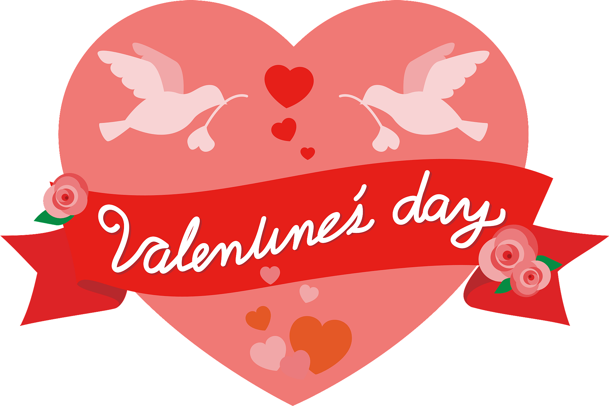
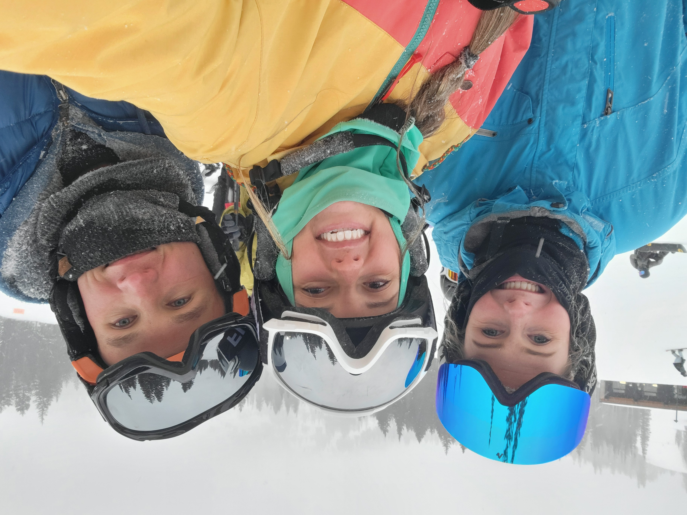
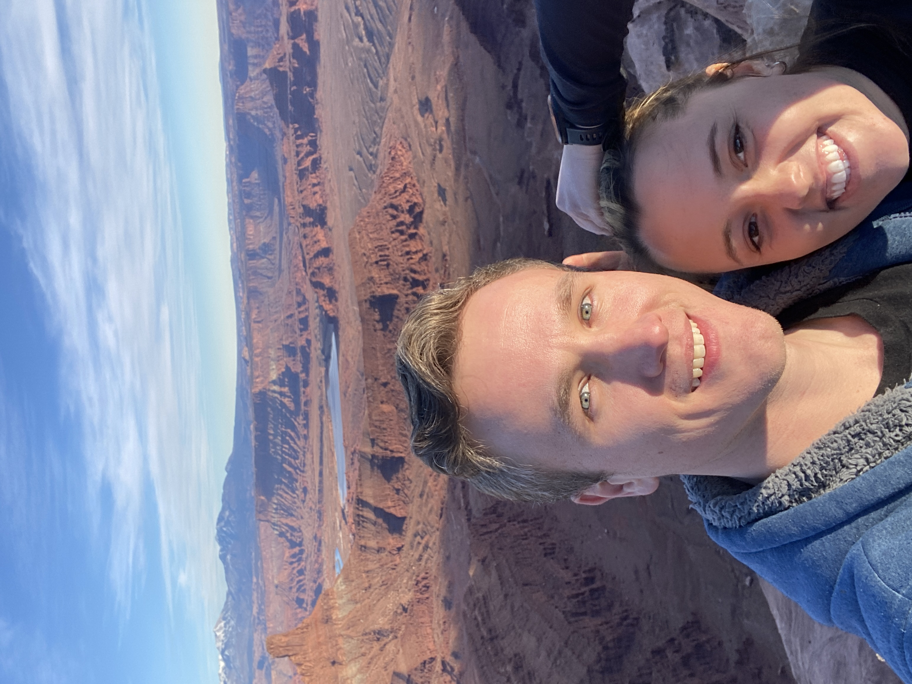
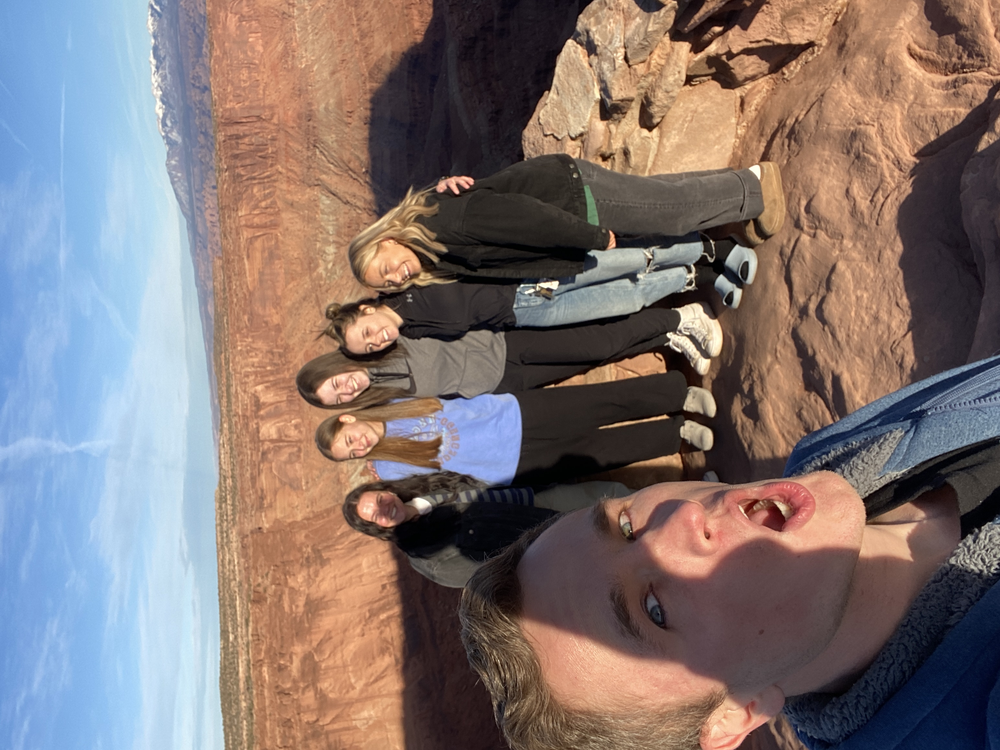
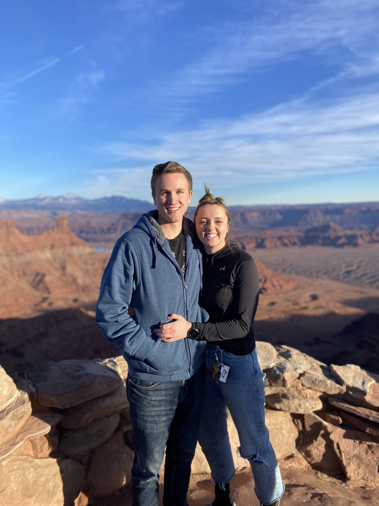
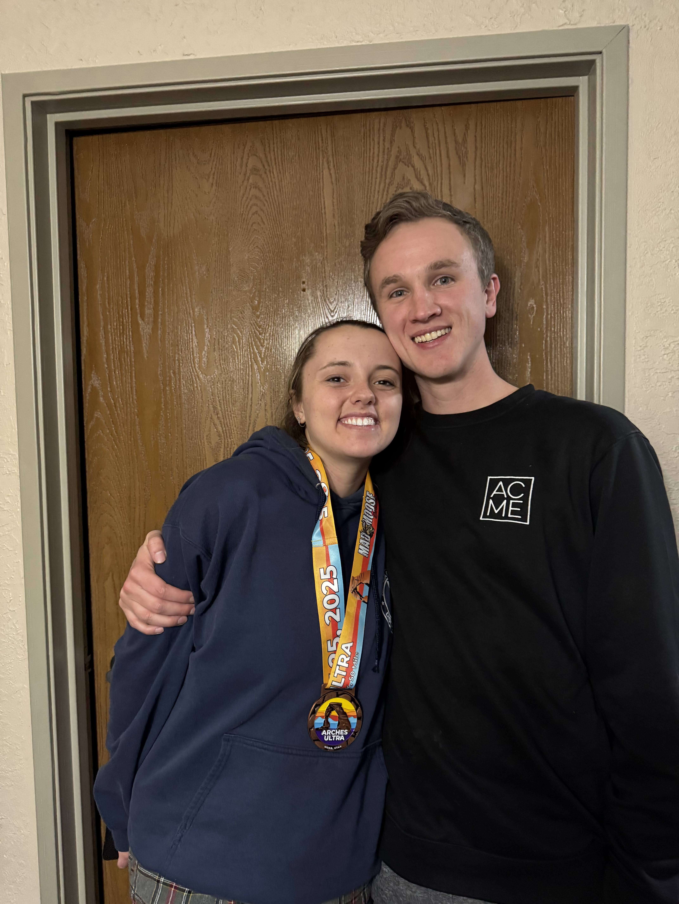
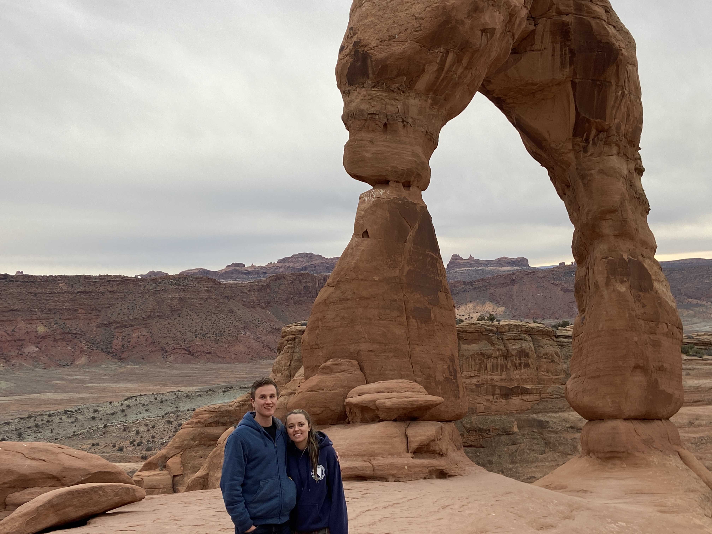
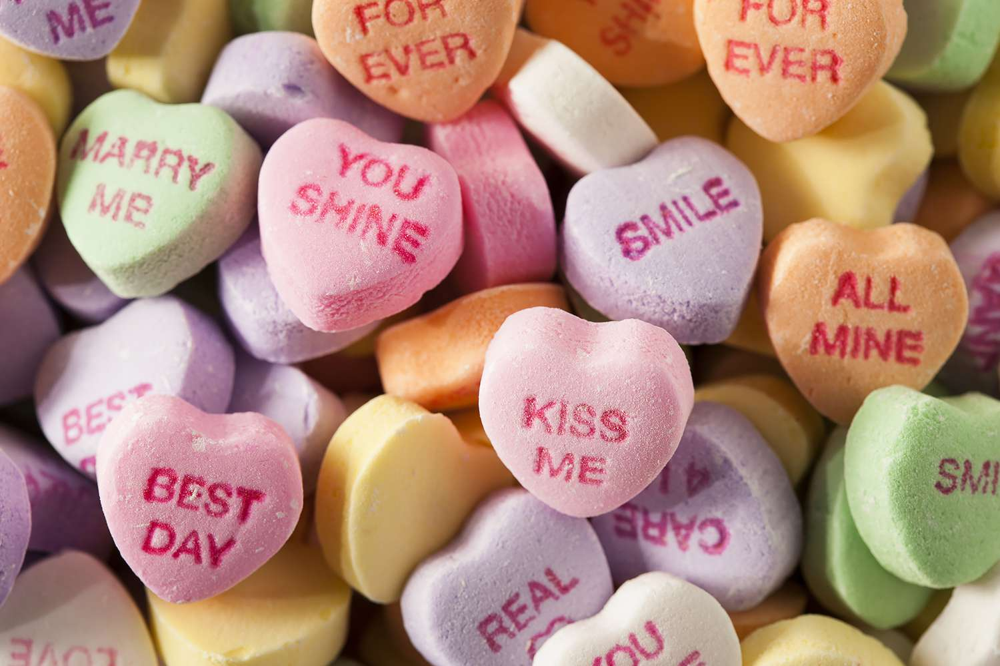

For my special someone :)
"Let all your things be done with charity."
- 1 Corinthians 16:14
Hey you silly goose
Thanks for being awesome and for being my girlfriend. You've made my whole year better and I love
how thoughtul and supportive you are. I've made you this little note to show you how much I care
but I know you like paper so I'll make sure to write you a letter too.

Since one of the advantages of digital media is all the pictures I can include I've decided to
abuse this privelege.

I love skiing with you! Its made the winter so much fun and now that the commute
is just more time with you I don't worry about it. This might be a little unfortunate but
you're very cute when you're terrified and start singing or swearing in french hehe. Glad
I was able to unintentionally catch your ski that one time.

Here's the start of my little Moab montage of us. I've always wanted to go and
I'm so glad I got to go with you. <3
 Hehehe Elsie's foot
Hehehe Elsie's foot

Apparently you like this one so I made sure to include it ya silly goose

Look at that view! Almost as good as that cute girl next to me!

My little racer! I'm so proud of you and your accomplishment. I know it was a lot of
work and never easy but I'm glad you get to enjoy it so much.
It was so fun to meet your family too! I'm glad I got to spend a little
more time with them since. You're brothers are like little forces of nature but skiing was
sure fun with thme

THIS WAS SO COOL! Thanks for taking me on a hike immediately after finishing a 50k.
And thanks for sharing some of your favorite things and places with me. Delicate Arch was
very magic, especially during the off season.

Here's some weird candies for you and I hope you feel as special as you are to me :)